← Buoyancé
Exhibition · Ars Electronica Festival 2025
Buoyancé – Tug(gle)
An installation of Buoyancé at Ars Electronica Festival 2025 in Linz, Austria.
About
Buoyancé – Tug(gle) brought Buoyancé out of the lab and into a public festival setting, where visitors could interact with helium-inflated balloons reeled through the air by mobile robots.
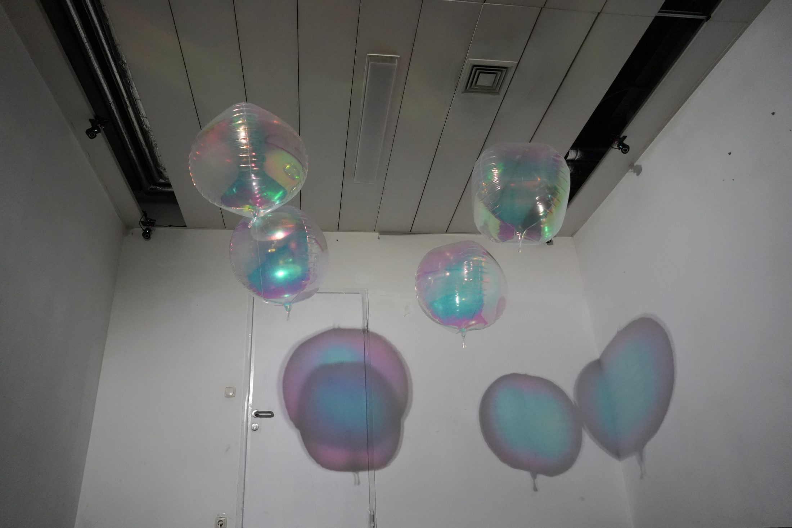
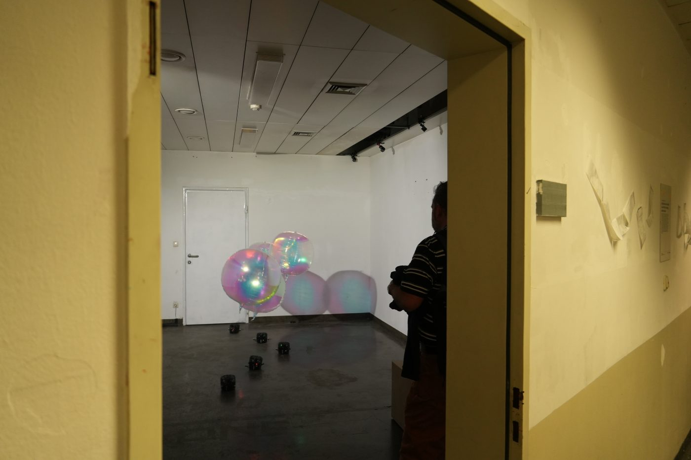
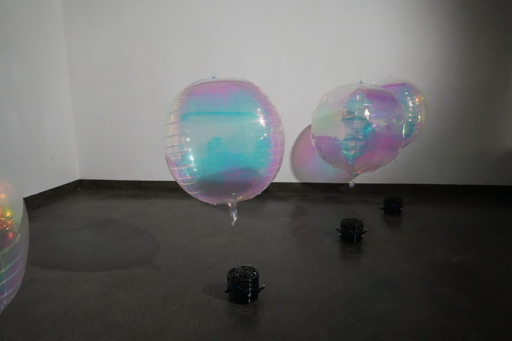
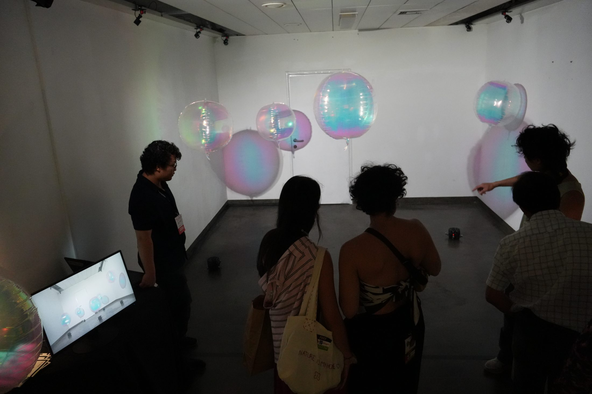
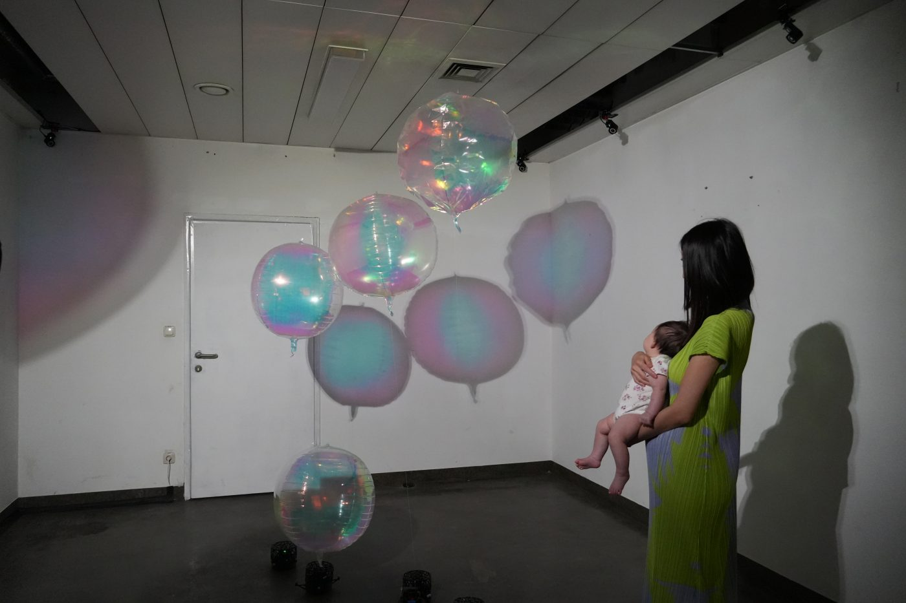
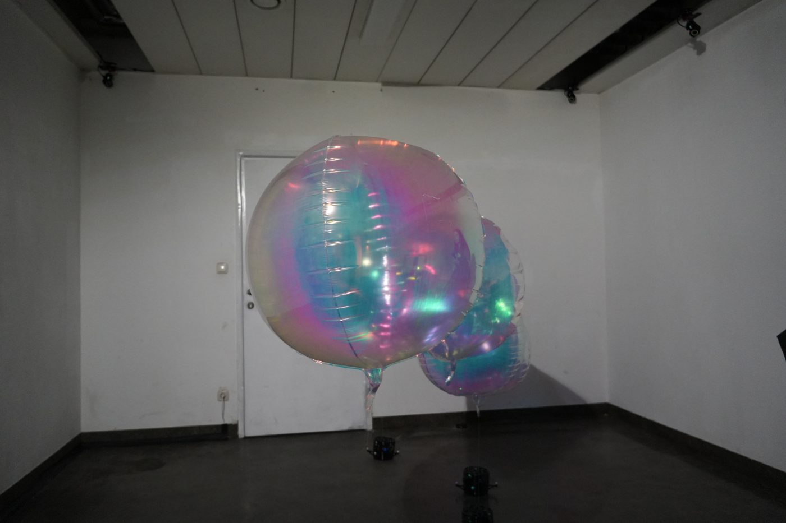
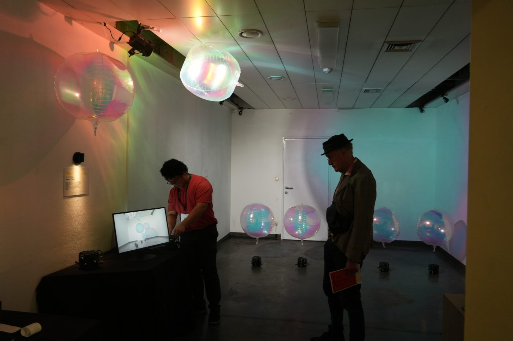
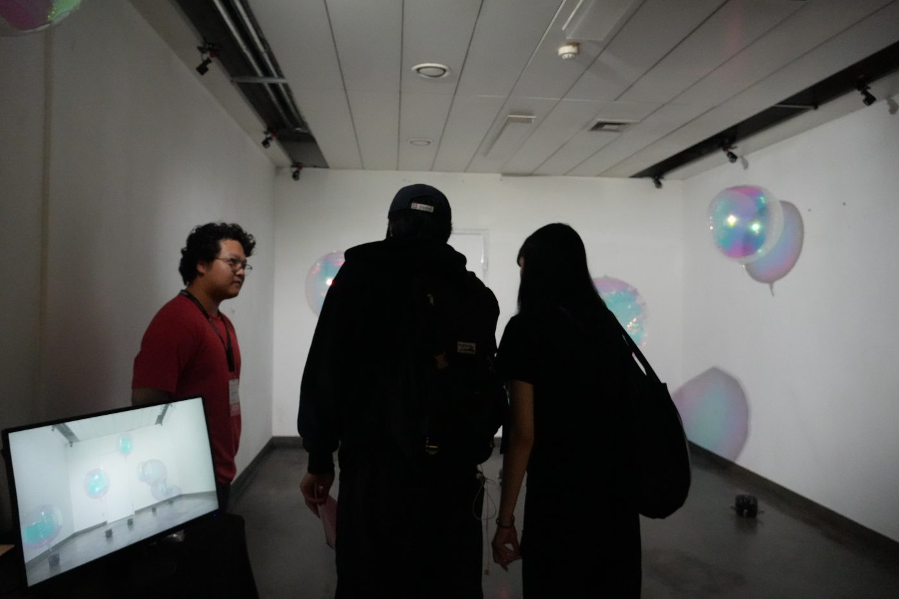
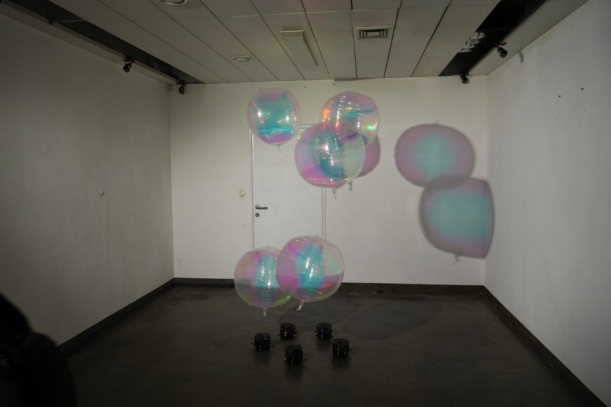
Rehearsal
Before the festival, we staged a rehearsal of the installation to tune the robots, balloons, and lighting.
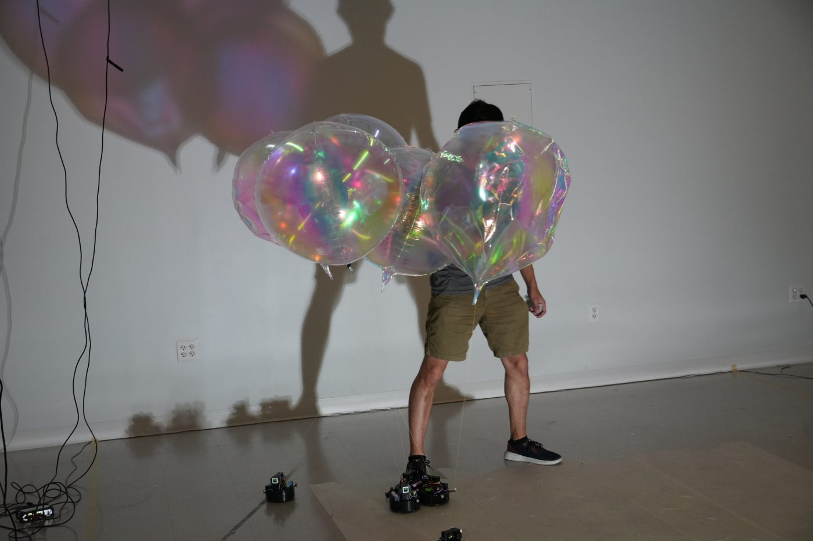
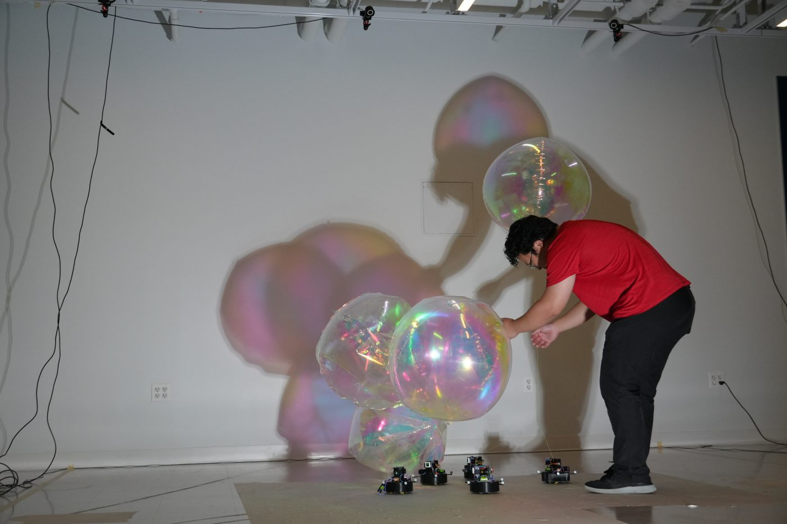
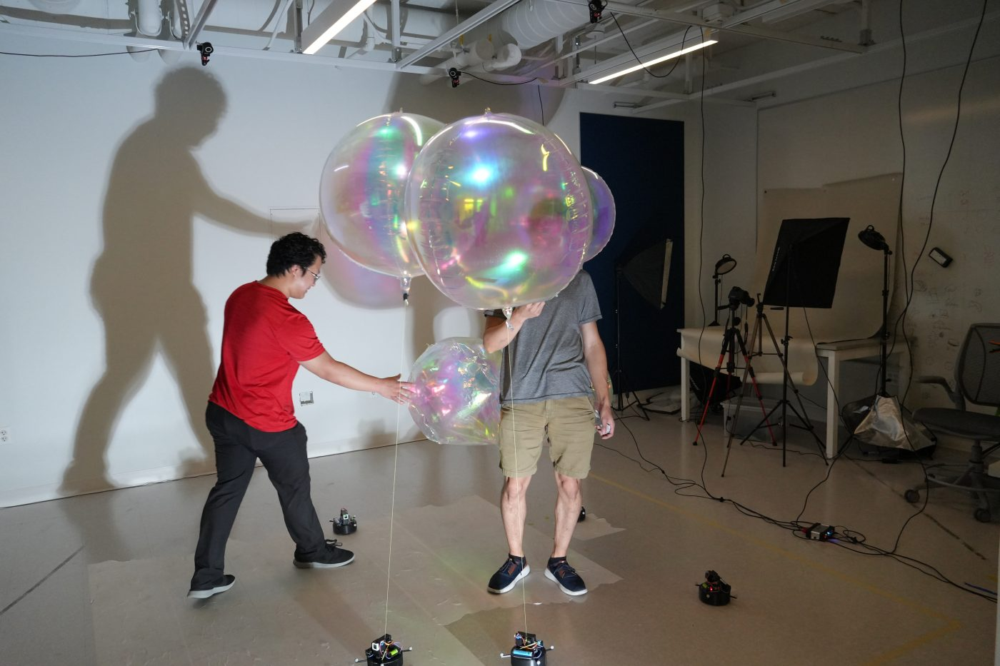
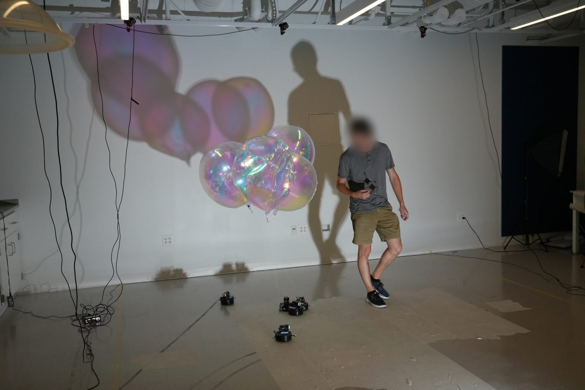
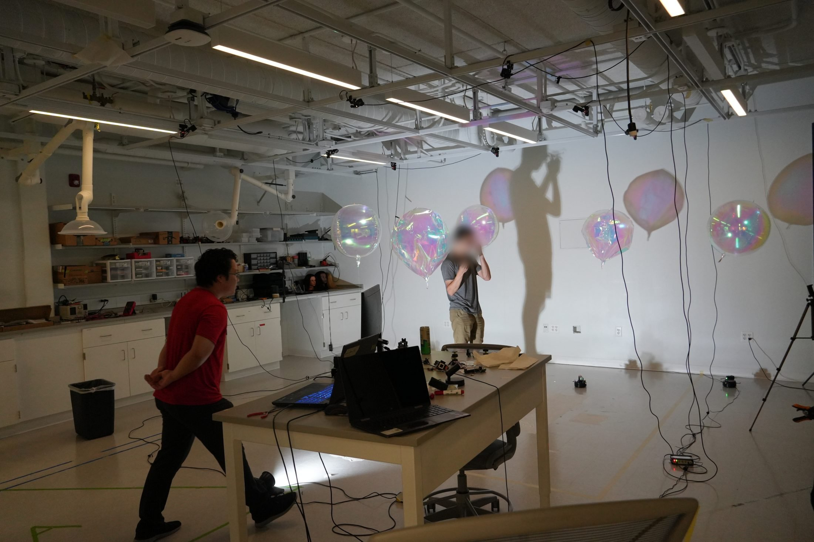
Related
- Installation
- Public Engagement
- Actuation
- Spatial Interfaces